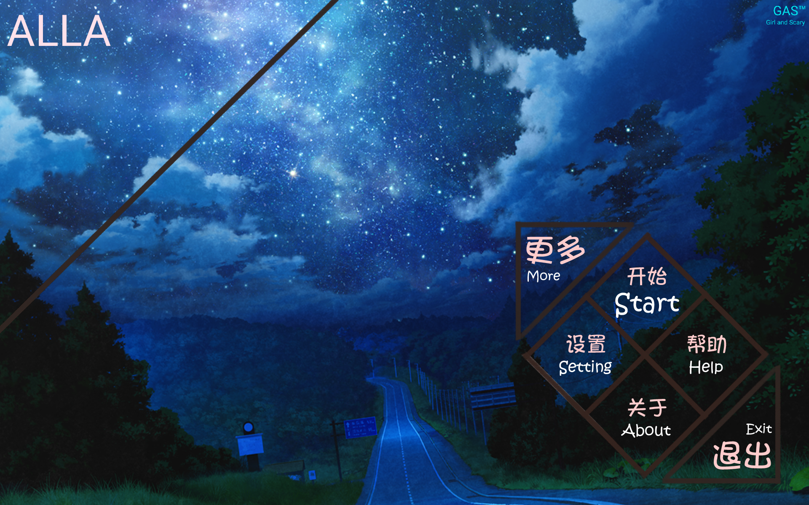

最长的希腊语"Archaiomelesidonophrunicherata"是古希腊早期喜剧代表作家阿里斯多芬的作品《蜂》的一句台词。
ALLA是英语单词“ALL”和最长的希腊语"Archaiomelesidonophrunicherata"的缩写,意为“皆为可爱之人”。
ALLA是一个心理恐怖视觉小说类型的游戏，游戏的定位为心理恐怖游戏，并且会在之后的游玩过程中慢慢加入恐怖元素，目前剧本里没有任何恐怖元素，但会在未来的开发中加入。
这是一个不是游戏的游戏，用以证明GAS组全员曾经存在过，即使GAS组成员不在世上了，或者被遗忘，但是这个游戏不会被抹除，我们仍然可以通过这个游戏来证明我们曾经存在过的事实。
